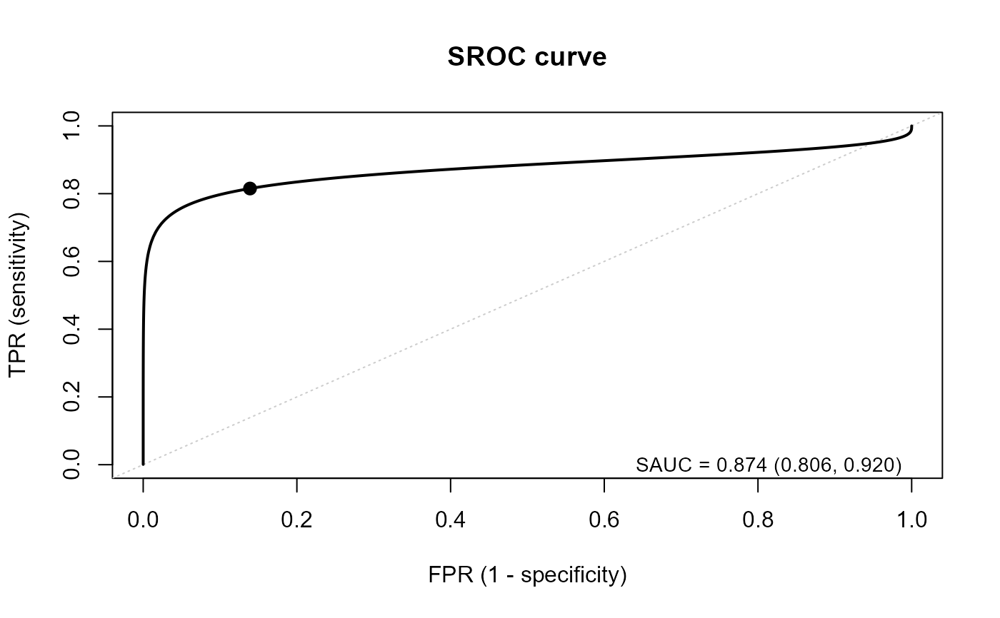
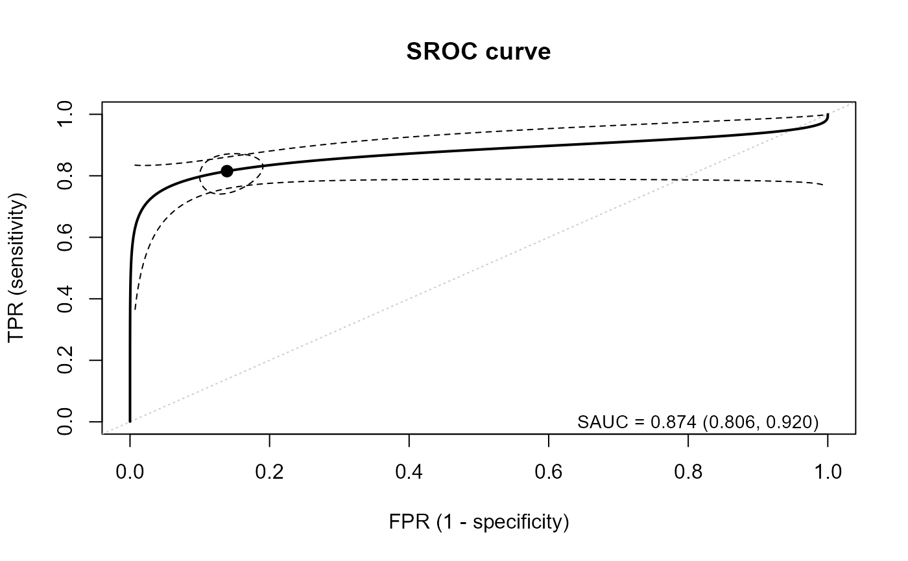

Bivariate random-effects model (Reitsma's model) estimating the SROC curve without publication bias
reitsma.sroc.RdThis function fits the bivariate random-effects model of the logit-transformed sensitivity and specificity (Reitsma et al., 2005) by the maximum likelihood method, and calculates the SAUC and its confidence interval. Publication bias is not considered.
Arguments
- TP
Specify the column of true positives (TP).
- FN
Specify the column of false negatives (FN).
- FP
Specify the column of false positives (FP).
- TN
Specify the column of true negatives (TN).
- data
A data frame containing the columns of
TP,FN,FP, andTN. One row corresponds to one study. Ifdata = NULL(default),TP,FN,FP, andTNare evaluated in the calling environment (e.g., numeric vectors).- cc.value
Value added to the cells for the “continuity correction”, within (0, 1]. The default is 0.5.
- cc.type
Type of the “continuity correction” (
c("single", "all")). The default is"single"."single":cc.valueis added to all the cells of the studies with at least one zero cell."all":cc.valueis added to all the cells of all the studies if at least one study has a zero cell.- ci.level
The confidence level of the confidence intervals, within (0, 1). The default is 0.95.
- parset
A list of the settings for the estimation, which updates the default settings. Bad initial values and bounds may cause non-convergence.
inital.values: The initial values ofc(mu1, mu2, tau1, tau2, rho). The default isc(0.1, 0.1, 0.1, 0.1, -0.1). If it isNULLor not a vector of length 5, the estimates bymixmetaare used.mu.bound: \(\mu_1\) and \(\mu_2\) are searched within[-mu.bound, mu.bound]. The default is 5.tau.bound: \(\tau_1\) and \(\tau_2\) are searched within[eps, tau.bound]. The default is 5.eps: The lower bound of \(\tau_1\) and \(\tau_2\). The default is1e-5.
Value
An object of class "sroc": the output of nlminb
(par is (mu1, mu2, tau1, tau2, rho); tau1 and tau2 are standard deviations)
with the following additional elements.
If nlminb failed, an object of class "try-error".
var.mlThe inverse of the numerical Hessian matrix of the negative log-likelihood.
sauc.ciSAUC and its confidence interval.
mu1.ci,mu2.ciThe estimates and confidence intervals of \(\mu_1\) and \(\mu_2\), and of the sensitivity and specificity.
par.allAll the estimates:
mu1,mu2,tau1^2,tau2^2,tau12,sauc,sens,spec.dataA data frame of the study-level logit-transformed sensitivity (
y1) and specificity (y2) and their within-study variances (v1,v2), used byplot.srocto add the studies (add.study = TRUE).
The call and ci.level are kept in the attributes "call" and "ci.level".
The results can be shown by print.sroc, summary.sroc, and plot.sroc.
References
Reitsma JB, Glas AS, Rutjes AW, Scholten RJ, Bossuyt PM, Zwinderman AH (2005). Bivariate analysis of sensitivity and specificity produces informative summary measures in diagnostic reviews. Journal of Clinical Epidemiology, 58(10), 982–990. doi:10.1016/j.jclinepi.2005.02.022
Examples
## load data
data(IVD)
fit <- reitsma.sroc(TP = TP, FN = FN, FP = FP, TN = TN, data = IVD)
## main results
fit
#> SROC curve: bivariate random-effects model (Reitsma et al., 2005)
#> Publication bias is not considered
#>
#> K Conv SAUC 95% CI Sens 95% CI Spec 95% CI
#> 33 yes 0.874 [0.806, 0.920] 0.815 [0.757, 0.862] 0.861 [0.821, 0.893]
#>
#> Estimates (tau1, tau2: between-study SDs; rho: correlation):
#> mu1 mu2 tau1 tau2 rho
#> 1.484 1.824 0.597 0.826 -0.424
## estimates with SEs and confidence intervals
print(fit)
#> SROC curve: bivariate random-effects model (Reitsma et al., 2005)
#> Publication bias is not considered
#>
#> K Conv SAUC 95% CI Sens 95% CI Spec 95% CI
#> 33 yes 0.874 [0.806, 0.920] 0.815 [0.757, 0.862] 0.861 [0.821, 0.893]
#>
#> Estimates (tau1, tau2: between-study SDs; rho: correlation):
#> mu1 mu2 tau1 tau2 rho
#> 1.484 1.824 0.597 0.826 -0.424
summary(fit)
#> SROC curve: bivariate random-effects model (Reitsma et al., 2005)
#> Publication bias is not considered
#>
#> Call:
#> reitsma.sroc(TP = TP, FN = FN, FP = FP, TN = TN, data = IVD)
#>
#> ============================================================
#> Results
#> ============================================================
#> Number of studies: 33
#> Convergence: yes (relative convergence (4))
#> Log-likelihood: -31.076
#>
#> Parameters (tau1, tau2: between-study SDs; rho: correlation)
#> ------------------------------------------------------------
#> Estimate SE 95% CI
#> mu1 1.484 0.177 [1.136, 1.832]
#> mu2 1.824 0.154 [1.522, 2.125]
#> tau1 0.597 0.175 [0.336, 1.062]
#> tau2 0.826 0.117 [0.626, 1.090]
#> rho -0.424 0.236 [-0.769, 0.111]
#>
#> Summary measures
#> ------------------------------------------------------------
#> Estimate 95% CI
#> Sensitivity 0.815 [0.757, 0.862]
#> Specificity 0.861 [0.821, 0.893]
#> SAUC 0.874 [0.806, 0.920]
#>
#> All estimates (par.all)
#> ------------------------------------------------------------
#> mu1 mu2 tau1^2 tau2^2 tau12 sauc sens spec
#> 1.484 1.824 0.357 0.683 -0.209 0.874 0.815 0.861
#>
## elements of the fitted model
fit$par.all
#> mu1 mu2 tau1^2 tau2^2 tau12 sauc sens
#> 1.4839917 1.8236493 0.3569361 0.6825891 -0.2094967 0.8735863 0.8151747
#> spec
#> 0.8610034
fit$sauc.ci
#> sauc sauc.lb sauc.ub
#> 0.8735863 0.8057723 0.9200719
## SROC curve with the summary point
plot(fit)

## add the pointwise confidence band and the confidence region of the summary point
plot(fit, plot.ci = TRUE, spoint.region = TRUE)

plot(fit, add.study = TRUE) # studies as open circles
 plot(fit, add.study = TRUE, study.size = "precision") # size is proportional to 1/sqrt(v1 + v2)
plot(fit, add.study = TRUE, study.size = "precision") # size is proportional to 1/sqrt(v1 + v2)